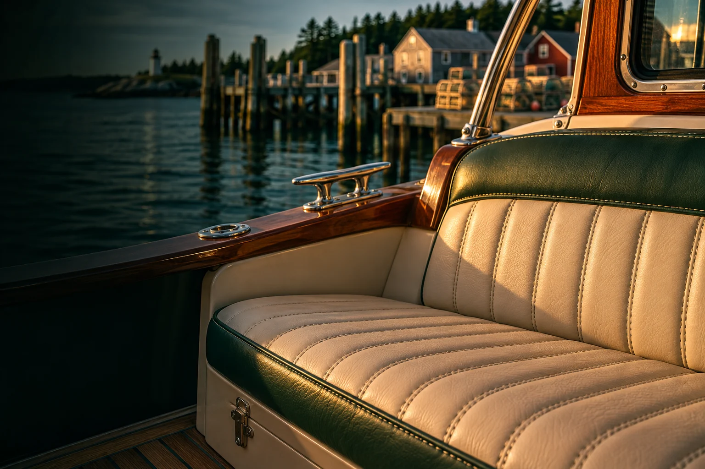

South Portland, Maine Est. 2010
Good bones.
New stitches.
Custom upholstery for the things worth keeping. From a boat you’ve had for years to the back seat of an old favorite.
Explore the workOn the waterOn the roadInside your business
What we do
Keep the piece.
Change the finish.
Salt, sun and years of use take a toll. Coastal Upholstery works on boat interiors, antique auto and motorcycle seats, leather repairs and commercial seating.
Something worth keeping?
Show us the piece and the spot that needs attention.